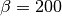
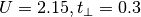

Isolated molecule spectral function in symmetric basis¶
For the case of contact interaction in the di-atomic molecule case spectral function are evaluated by means of the Lehmann representation
# author: Óscar Nájera
from __future__ import division, absolute_import, print_function
import numpy as np
import scipy.linalg as LA
import matplotlib.pyplot as plt
from dmft.plot import plot_band_dispersion
import dmft.dimer as dimer
import slaveparticles.quantum.operators as op
from pyutils.latex_print import ket
Traceback (most recent call last):
File "/home/oscar/dev/sphinx-gallery/sphinx_gallery/gen_rst.py", line 453, in execute_code_block
exec(code_block, example_globals)
File "<string>", line 12, in <module>
ModuleNotFoundError: No module named 'pyutils'
The Dimer alone¶
The ground state for half filling is defined at superposition of S=0 states containing the double occupation of each site plus the individually occupied sites. This allows for the super-exchange process and makes it the ground state. The first exited state is formed by the triplet states S=1 where sites are singly occupied
def plot_eigen_spectra(U, mu, tp):
h_at, oper = dimer.hamiltonian_diag(U, mu, tp)
eig_e = []
eig_e.append(LA.eigvalsh(h_at[1:5, 1:5].todense()))
eig_e.append(LA.eigvalsh(h_at[5:11, 5:11].todense()))
eig_e.append(LA.eigvalsh(h_at[11:15, 11:15].todense()))
plt.figure()
plt.title('Many particle Energy Spectra U={} $t_\perp={}$'.format(U, tp))
plt.plot(np.concatenate(eig_e), "o-")
plt.ylabel('Energy')
plt.xlabel('Eigenstate by N particle block')
plt.axvline(x=3.5)
plt.axvline(x=9.5)
plot_eigen_spectra(1., -1 / 2, 0.5)
From the next Spectral functions we see that exitations go from ground state to the bonding anti-bonding bands. If the ground-state is close to the triplet state or reachable by thermal exitation, it is also possible to see the exitation from the triplet state to the bonding anti-bonding bands.
The main role in the spetra is played by the local interaction, which is allowed to grow sufficiently. It split the largely the exitation spectra, the inner hopping parameter plays little role, only to lift the ground state degeneracy by super-exchange.
Diagonal basis¶
def plot_A_ev_utp(beta, urange, mu, tprange):
w = np.linspace(-2, 3.5, 1500) + 1j * 1e-2
Aw = []
for u_int, tp in zip(urange, tprange):
h_at, oper = dimer.hamiltonian_diag(u_int, mu, tp)
eig_e, eig_v = op.diagonalize(h_at.todense())
gf = op.gf_lehmann(eig_e, eig_v, oper[0].T, beta, w)
aw = gf.imag / gf.imag.min()
Aw.append(aw)
return np.array(Aw)
beta = 100.
A = plot_A_ev_utp(beta, np.linspace(0, 1, 51), 0, np.linspace(0, 1, 51)[::-1])
w = np.linspace(-2, 3.5, 1500)
plot_band_dispersion(w, A, r'Molecule exitation spectral function, $\beta={}$, $t_\perp+U=1$'.format(
beta), np.linspace(0, 1, 51))
plt.figure(1)
plt.ylabel(r'$U+A(\omega)$')
plt.xlim([-2, 3.5])
plt.figure(2)
plt.xlabel(r'$U$')
plt.ylabel(r'$\omega$')
plt.ylim([-2, 3.5])
weights of spectra¶
def exitation_ration(U, tp):
h_h2, oper = dimer.hamiltonian_diag(U, 0, tp)
_, eig_vecs = LA.eigh(h_h2.todense())
basis_create = np.dot(eig_vecs.T, oper[0].T.dot(eig_vecs))
tmat = np.square(basis_create)
return tmat[:, 0].sum() / tmat[0, :].sum()
tpr = np.linspace(0.001, 1.2, 24)
ur = np.linspace(0.0, 1.2, 20)
tpx, uy = np.meshgrid(tpr, ur)
ex_rat = np.array([[exitation_ration(u_int, tp)
for tp in tpr] for u_int in ur])
plt.figure()
plt.pcolormesh(tpx, uy, ex_rat, cmap=plt.get_cmap('inferno'))
plt.colorbar()
plt.xlabel(r'$t_\perp$')
plt.ylabel(r'$U$')
plt.title('Intensity ratio of peaks in the bonding basis')
Probability of each state¶
In the next section I study the distribution of states in the molecule. How they relate to the shape of the Hamiltonian and the density matrix.
First I start in the low temperature regime where the ground state dominates the behavior of the system. Taking  and  the Hamiltonian of the system and the density matrix look as follow.
basis_names = [r'AS\uparrow', r'S\uparrow', 'AS\downarrow', 'S\downarrow']
ind = np.array([0, 1, 2, 4, 8, 5, 10, 6, 9, 12, 3, 7, 11, 13, 14, 15])
chartlab = [r'$' + ket(i, basis_names) + r'$' for i in ind]
beta = 100
h_at, oper = dimer.hamiltonian_diag(2.15, 0, .3)
ev, evec = LA.eigh(h_at.todense())
Z = np.sum(np.exp(-beta * (ev - ev[0])))
wh_at = h_at.todense() - ev[0] * np.eye(16)
plt.figure()
plt.imshow(h_at.todense(), interpolation='none')
plt.colorbar()
plt.yticks(range(16), chartlab)
plt.title('Hamiltonian')
plt.tight_layout()
rho = LA.expm(-beta * wh_at) / Z
plt.figure()
plt.imshow(rho, interpolation='none')
plt.yticks(range(16), chartlab)
plt.colorbar()
plt.title('Density matrix')
plt.tight_layout()
The weight of each state¶
The diagonal elements of the density matrix give the weight of each state the next plot signal in blue the weight of the basis states in the recognizable quantum numbers and the green curve is the density matrix in the diagonal basis where one can follow by decreasing weight each state.
plt.figure()
plt.plot(np.diag(rho), range(16), 'o-')
plt.yticks(range(16), chartlab, color='b')
diagbas = ["".join(["{:+.2}{}".format(w, ke)
for w, ke in zip(evec.T[i], chartlab) if abs(w) > .1]) for i in range(16)]
ax2 = plt.twinx()
ax2.plot(np.exp(-beta * (ev - ev[0])) / Z, range(16), 'sg-')
ax2.set_yticks(range(16))
ax2.set_yticklabels(diagbas, color='g')
plt.tight_layout()
The weight of each state at B=5
beta = 5
h_at, oper = dimer.hamiltonian_diag(2.15, 0, .3)
ev, evec = LA.eigh(h_at.todense())
Z = np.sum(np.exp(-beta * (ev - ev[0])))
wh_at = h_at.todense() - ev[0] * np.eye(16)
rho = LA.expm(-beta * wh_at) / Z
plt.figure()
plt.imshow(rho, interpolation='none')
plt.yticks(range(16), chartlab)
plt.colorbar()
plt.title('Density matrix')
plt.tight_layout()
The weight of each state¶
The diagonal elements of the density matrix give the weight of each state the next plot signal in blue the weight of the basis states in the recognizable quantum numbers and the green curve is the density matrix in the diagonal basis where one can follow by decreasing weight each state.
plt.figure()
plt.plot(np.diag(rho), range(16), 'o-')
plt.yticks(range(16), chartlab, color='b')
diagbas = ["".join(["{:+.2}{}".format(w, ke)
for w, ke in zip(evec.T[i], chartlab) if abs(w) > .1]) for i in range(16)]
ax2 = plt.twinx()
ax2.plot(np.exp(-beta * (ev - ev[0])) / Z, range(16), 'sg-')
ax2.set_yticks(range(16))
ax2.set_yticklabels(diagbas, color='g')
plt.tight_layout()
Total running time of the script: ( 0 minutes 0.000 seconds)